소제목·인용구 단축키, 글쓰기 화면 상단 단축키 버튼, 블로그 분석 패널과 블로그 점수를 크롬에 한 번에 설치합니다. 처음 설치는 5분이면 끝납니다.
받은 zip 파일을 마우스 오른쪽 버튼으로 눌러 압축 풀기를 고릅니다. 안에 있는 nbx 폴더가 크롬에 불러올 확장 프로그램입니다.
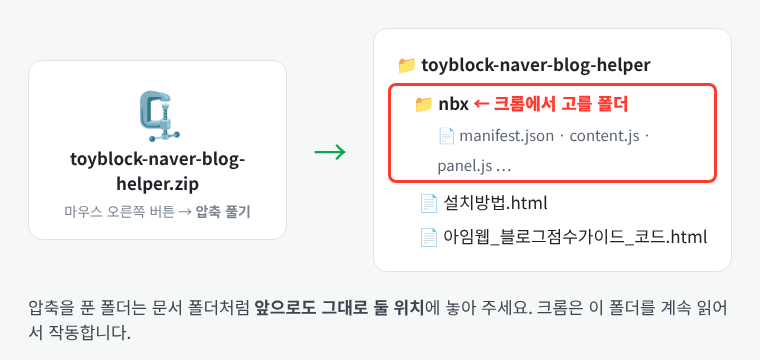
크롬 주소창에 chrome://extensions를 입력하고 Enter를 누릅니다. 오른쪽 위의 개발자 모드 스위치를 켭니다.
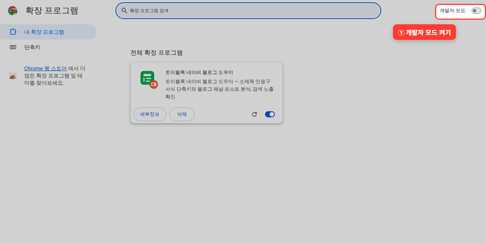
왼쪽 위에 생긴 압축해제된 확장 프로그램 로드를 누르고, 1단계의 nbx 폴더를 선택한 뒤 폴더 선택을 누릅니다.
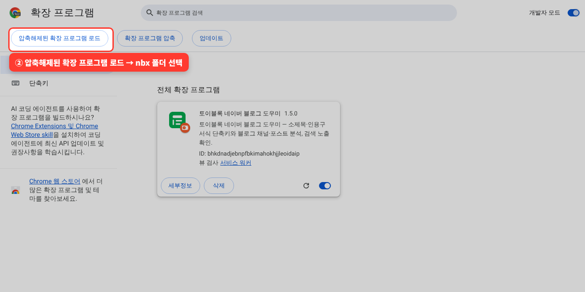
목록에 토이블록 네이버 블로그 도우미 1.5.0 카드가 생기면 설치가 끝났습니다. 카드의 스위치가 파란색으로 켜져 있는지 확인합니다.
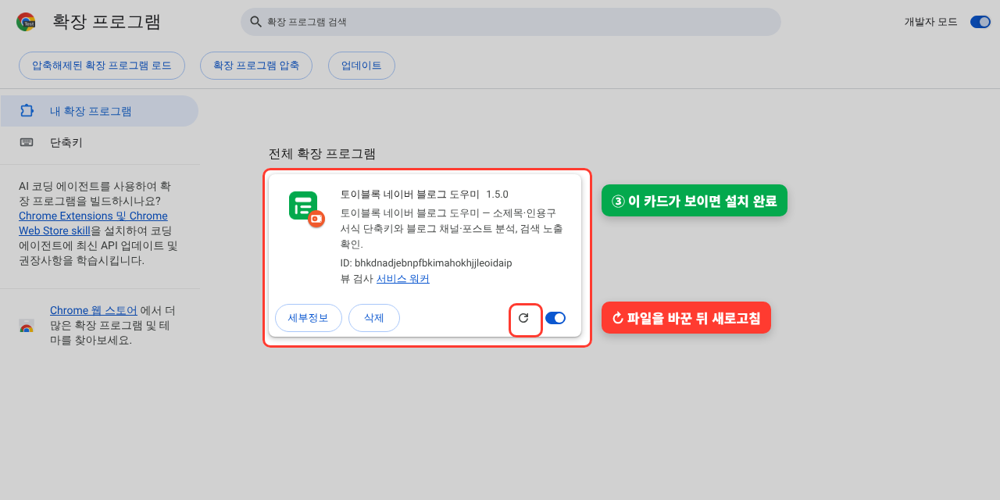
주소창 오른쪽 퍼즐 아이콘을 누르고 토이블록 옆의 핀을 누릅니다. 초록색 T 아이콘이 항상 보여서 설정과 점검을 바로 열 수 있습니다.
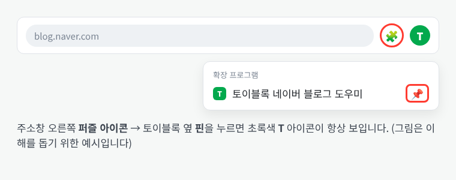
설치 전에 열어 둔 네이버 블로그 탭은 F5로 새로고침해야 토이블록이 작동합니다.
토이블록은 크롬 단축키로 작동합니다. 크롬이 키를 먼저 받아 네이버 에디터에 전달하므로 글쓰기 화면에서도 확실하게 듣습니다. 기본 지정은 아래와 같습니다.
| 단축키 | 기본 기능 |
|---|---|
| Ctrl+Shift+1 | 엔터+소제목 (엔터로 새 줄을 만든 뒤 그 줄을 소제목으로. 글자를 선택해 둔 상태면 그 문단 아래에 새 소제목 줄) |
| Ctrl+Shift+2 | 인용구1 (선택한 문단을 인용구 서식으로) |
| Ctrl+Shift+3 | 인용구2 (버티컬 라인 인용구 블록 삽입) |
| Ctrl+Shift+4 | 이미지 |
| 단축키 5~8 | 가운데정렬 · 글자크기+ · 볼드 · 링크삽입 (크롬 단축키 화면에서 직접 지정) |
주소창에 chrome://extensions/shortcuts를 입력하거나, 토이블록 설정의 크롬 단축키 직접 설정 열기를 누릅니다. 단축키1~4에 Ctrl + Shift + 1~4가 들어 있으면 준비가 끝났습니다.
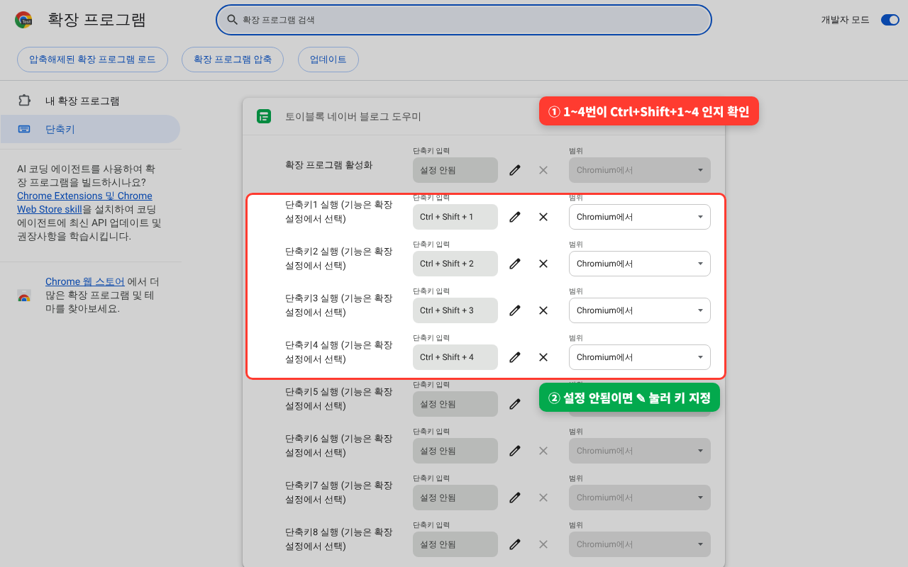
초록색 T 아이콘 → 단축키 · 글자 모양 설정을 열면 빨간 상자에 지금 지정된 크롬 단축키가 보입니다. 각 단축키에 어떤 기능을 붙일지, 소제목·인용구에 함께 적용할 글꼴·크기·색도 여기서 고릅니다.
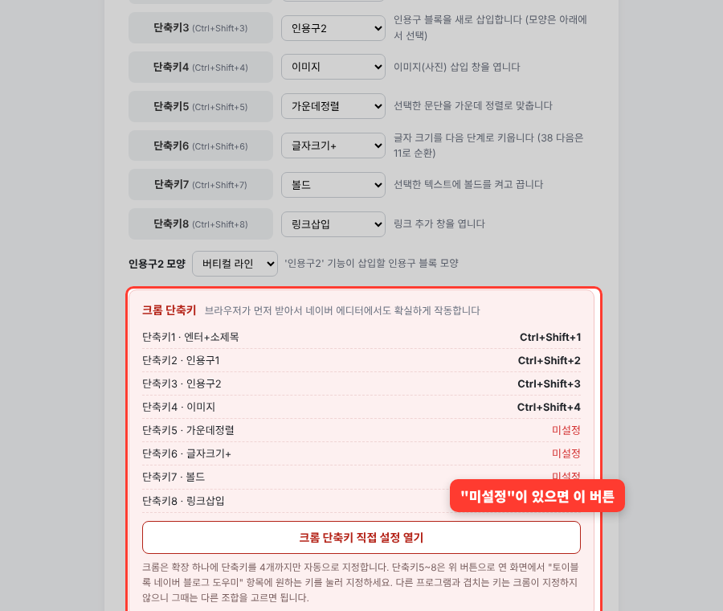
네이버 블로그 글쓰기 화면에서 본문을 한 번 클릭하고 단축키를 누르면 바로 적용되고, 화면 위에 "엔터+소제목 적용" 같은 알림이 잠깐 뜹니다. 본문을 쓰다가 Ctrl+Shift+1을 누르면 다음 줄이 바로 소제목이 되어 이어서 제목을 쓸 수 있습니다. 이때 화면 맨 위에 "토이블록 네이버 블로그 도우미에서 이 브라우저 디버깅을 시작함"이라는 줄이 잠깐 나타났다 사라지는데, 실제 키보드와 같은 엔터를 넣는 확실한 엔터 모드가 작동하는 표시이니 그대로 두면 됩니다. 이미 써 둔 문단을 소제목으로 바꿀 때는 그 글자를 드래그해 뜨는 미니 팝업의 소제목을 누르면 됩니다. 단축키가 듣지 않는 상황에서는 상단 빈 곳의 단축키 버튼을 눌러도 똑같이 실행됩니다. 버튼을 눌러도 본문에서 선택한 글자는 그대로 유지됩니다.
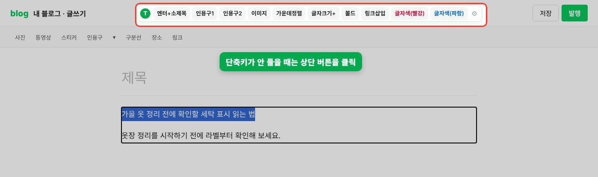
네이버 블로그를 열면 화면 왼쪽에 블로그 분석 버튼이 작게 붙어 있습니다. 누르면 아래로 펼쳐지고, 글을 스크롤해도 같은 자리에 머뭅니다. 작은 버튼이나 펼친 창 맨 위의 ⠿ TOYBLOCK 줄을 끌면 창이 통째로 옮겨지고, 옮긴 위치는 다음에 열 때도 그대로입니다. 화면 아래나 오른쪽 끝으로 옮기면 창이 위쪽·왼쪽으로 펼쳐져 화면 밖으로 나가지 않습니다. TOYBLOCK 줄을 두 번 누르거나 설정의 위치 처음으로를 누르면 처음 자리로 돌아옵니다.
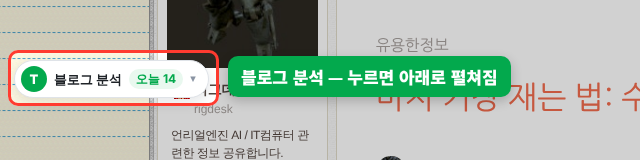
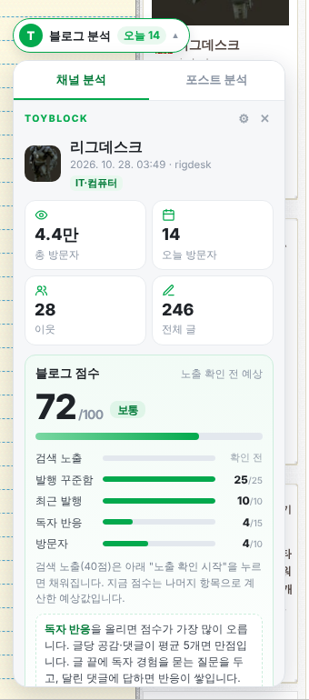
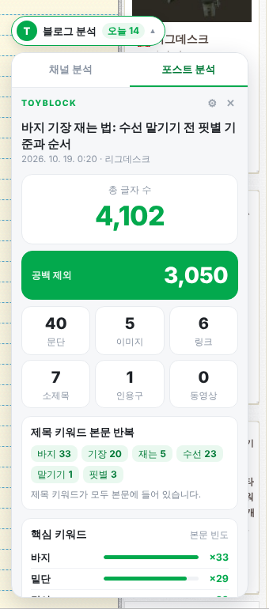
노출 확인 시작을 누르면 최근 글 30편을 제목으로 하나씩 검색해 검색 노출 점수(40점)를 채웁니다. 사람이 검색하는 속도에 맞춰 1분 정도 걸리고, 결과는 12시간 동안 저장됩니다. 점수 카드의 블로그 점수 올리는 법 보기를 누르면 가장 낮은 항목의 개선 방법 페이지가 열립니다. 노출 확인에서 누락이나 주의로 나온 글이 있으면 누락·주의 글 살리는 법 보기 버튼이 함께 보이고, 5분 점검부터 원인별 고치는 방법, 검색 반영 요청, 고친 뒤 다시 확인하는 순서까지 정리된 부분으로 바로 이동합니다.
분석 패널의 이웃 소통 탭에는 이웃들의 새 글(이웃 새 글)과, 키워드로 검색했을 때 상위에 보이는 글(키워드 노출 글)이 목록으로 나옵니다. 글을 누르면 그 글이 새 탭으로 열리면서 바로 댓글 입력칸으로 이동하고, 그 글의 제목·소제목·본문과 블로거 닉네임을 조합한 댓글이 이미 복사된 상태가 됩니다. 입력칸에 Ctrl+V로 붙여 넣고, 읽어 보며 고친 뒤 등록을 직접 누르면 됩니다.
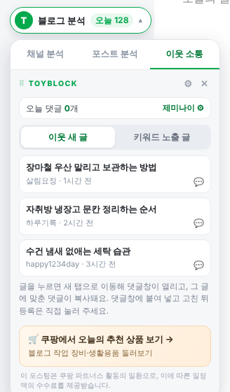
글 화면 오른쪽 위에는 댓글 도우미 창이 떠서 초안 3개를 보여 줍니다. 1번이 복사돼 있고, 다른 초안은 복사나 댓글창에 넣기로 바꿀 수 있습니다. 다시 만들기는 새 초안을, 템플릿으로는 키 없이 쓰는 템플릿 조합을 만듭니다. 창은 입력칸과 등록 버튼을 가리지 않는 자리에 뜨고, —를 누르면 작게 접힙니다.
세 초안은 방향이 서로 다릅니다. 하나는 글에서 도움이 된 부분을 짚고, 하나는 글 내용과 이어지는 질문을 하고, 하나는 적용해 보겠다는 다짐이나 응원을 담습니다.
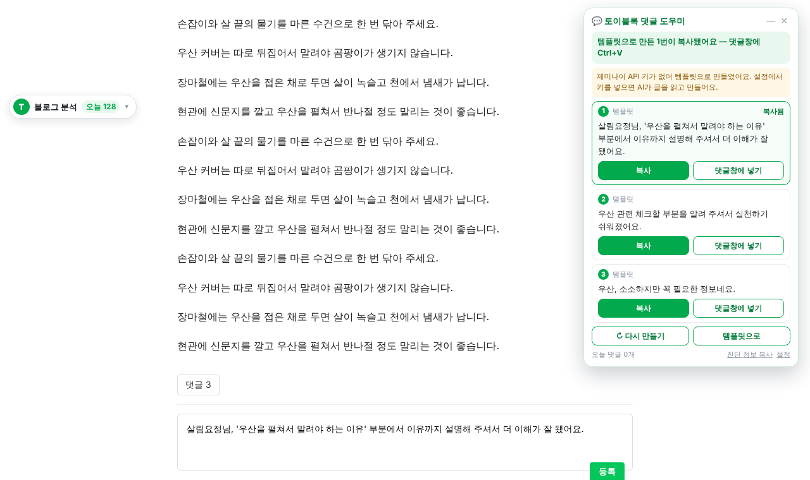
네이버 검색 결과와 네이버 이웃새글 화면에서도 글 제목 옆의 💬 댓글 버튼을 누르면 똑같이 동작합니다. 검색 화면은 그대로 두고 새 탭이 열립니다.
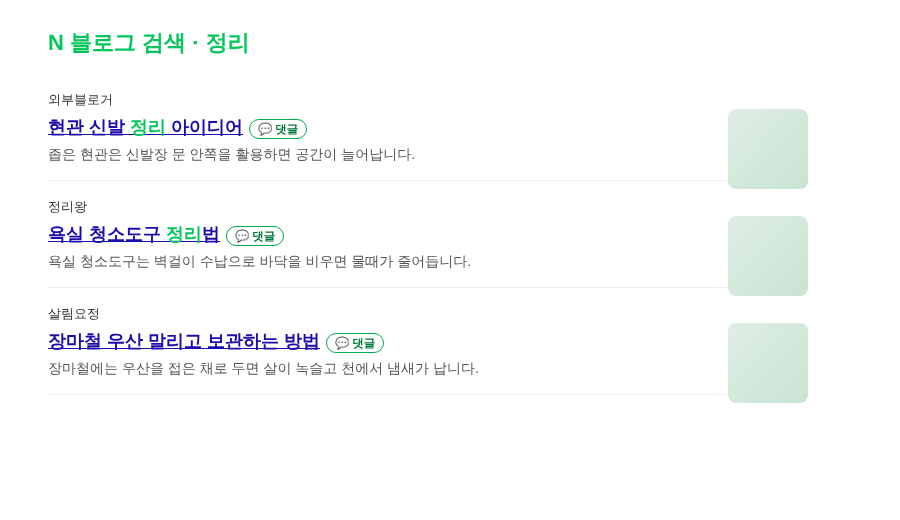
AI로 만들기(선택) — 설정의 이웃 소통 · 댓글 도우미에서 제미나이·클로드·GPT 중 하나를 고르고 API 키를 넣으면, AI가 글을 읽고 같은 말투(닉네임님 + 칭찬 + 감사 + 눈웃음)로 그 글에 맞춘 댓글을 씁니다. 제미나이 키는 Google AI Studio에서 무료로 받을 수 있고, 연결 확인으로 바로 시험할 수 있습니다. 키가 없거나 연결이 안 되면 짧은 인사 댓글을 조합해 만듭니다. 닉네임님 뒤에 주인 칭찬·글 칭찬·관심이 있었다는 말·좋은 정보라는 말 가운데 하나를 고르고(글의 핵심어를 넣기도 함), 감사 인사와 눈웃음(^^ ^_^ ^ㅁ^)을 붙입니다. 예) “하루기록님 냉장고 관련해서 좋은 정보 감사합니다. ^^” 같은 블로그에 같은 칭찬이 다시 나오지 않게 기록해 둡니다. 키는 내 크롬에만 저장되고, 댓글을 만들 때 글의 제목·소제목·본문 일부와 닉네임이 고른 AI 회사로 보내집니다.
압축 파일 안의 아임웹_블로그점수가이드_코드.html을 메모장으로 열어 전체를 복사합니다. 아임웹 디자인 모드에서 새 페이지에 코드 위젯을 넣고 붙여 넣은 뒤 저장합니다. 그 페이지 주소를 토이블록 설정의 블로그 점수 팁 페이지 주소 칸에 넣으면, 패널의 버튼이 아임웹 페이지의 해당 항목으로 바로 연결됩니다. 주소 칸이 비어 있으면 확장 안에 들어 있는 같은 내용의 페이지가 열립니다.
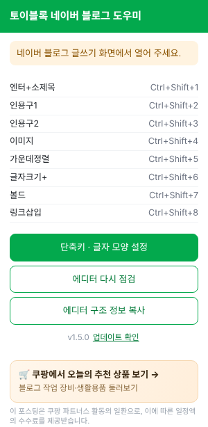
초록색 T 아이콘을 누르면 지금 지정된 단축키 목록과 설정 버튼이 보입니다. 글쓰기 화면에서 열면 에디터 버튼을 제대로 찾았는지 ✓/✕로 점검해 줍니다.
✕가 보이면 에디터 구조 정보 복사를 눌러 개발자에게 보내 주세요. 툴바 버튼 정보만 복사되고 글 내용·닉네임·블로그 주소는 담기지 않습니다.
토이블록은 6시간마다 온라인으로 새 버전이 있는지 확인합니다. 새 버전이 나오면 확장 아이콘에 분홍색 N 표시가 뜨고, 아이콘을 누르면 맨 위에 바뀐 내용과 새 버전 받기 버튼이 보입니다. 아이콘 창 맨 아래의 업데이트 확인을 누르면 바로 확인할 수도 있습니다.
새 버전 받기로 zip을 내려받아 압축을 풀고, 안의 nbx 폴더 파일들로 지금 쓰는 nbx 폴더의 파일을 덮어씁니다.
chrome://extensions에서 토이블록 카드의 새로고침(↻) 버튼을 누릅니다. 설정해 둔 단축키와 글자 모양은 그대로 남습니다.
열려 있는 블로그 탭을 F5로 새로고침합니다.
최신 버전과 바뀐 내용은 언제든 github.com/toy80318-sys/blog-assets의 toyblock-extension 폴더에서 볼 수 있습니다.
크롬 단축키 화면에서 단축키1~4가 "설정 안됨"인지 먼저 확인합니다. 지정돼 있다면 블로그 탭을 F5로 새로고침하고 본문을 한 번 클릭한 뒤 다시 누릅니다. 그 사이에도 글쓰기 화면 상단의 토이블록 버튼은 클릭으로 바로 쓸 수 있습니다.
확장 아이콘 → 단축키 설정의 "엔터+소제목"에서 확실한 엔터 모드가 켜져 있는지 확인합니다(기본으로 켜져 있음). 켜져 있는데도 안 되면 본문을 한 번 클릭하고 Ctrl+Shift+1을 한 번 누른 뒤, 확장 아이콘 → 에디터 구조 정보 복사를 눌러 보내 주세요. 방금 엔터를 어떤 방법으로 넣으려 했고 어디서 막혔는지가 함께 담깁니다. 새 줄이 생기지 않으면 소제목도 바꾸지 않으니 글이 망가지지는 않습니다.
확실한 엔터 모드가 크롬의 디버거 기능으로 엔터를 넣는 순간 크롬이 띄우는 안내입니다. 엔터를 넣자마자 연결을 끊기 때문에 곧 사라집니다. 보기 싫다면 설정에서 확실한 엔터 모드를 끌 수 있지만, 이 경우 에디터에 따라 엔터가 들어가지 않을 수 있습니다.
네이버에 로그인했는지 먼저 확인합니다. 로그인한 상태라면 글 아래 댓글 버튼을 직접 눌러 열고, 도우미 창의 댓글창에 넣기를 누르거나 Ctrl+V로 붙여 넣으면 됩니다. 계속 그렇다면 도우미 창 아래의 진단 정보 복사를 눌러 보내 주세요. 댓글창 구조만 담기며, 대부분 업데이트 없이 온라인 설정으로 고쳐집니다.
네이버에 로그인한 크롬에서만 이웃 새 글을 읽을 수 있습니다. 로그인했는데도 안 되면 탭 안의 네이버 이웃새글 화면 열기를 눌러, 그 화면의 글 옆 💬 댓글 버튼을 쓰면 됩니다. 탭 안의 불러오기 진단 복사를 눌러 보내 주시면 원인을 찾아 고쳐 드립니다.
키를 붙여 넣을 때 앞뒤 공백이나 글자가 빠지지 않았는지 확인하고 설정의 연결 확인을 눌러 봅니다. 사용 한도는 잠시 뒤 풀립니다. 그동안에도 댓글은 템플릿 조합으로 만들어지니 계속 쓸 수 있습니다.
네이버 에디터 화면 구성이 바뀌었을 가능성이 있습니다. 글쓰기 화면에서 확장 아이콘 → 에디터 구조 정보 복사를 눌러 보내 주시면 맞춰 고쳐 드립니다.
분석 패널은 블로그 글을 볼 때 나타나고, 글쓰기 화면에서는 에디터를 가리지 않도록 숨겨집니다. 설정의 "블로그 화면 왼쪽에 분석 패널 표시"가 켜져 있는지도 확인해 주세요.
네이버 검색이 잠시 응답하지 않으면 자동으로 멈춥니다. 몇 분 뒤 다시 확인을 누르면 이미 확인한 글은 건너뛰고 이어서 확인합니다.
직접 불러온 확장 프로그램에 크롬이 띄우는 안내입니다. 닫기를 누르면 되고, 토이블록은 그대로 작동합니다.
토이블록 네이버 블로그 도우미 v1.6 · 확장 화면 하단의 쿠팡 배너는 쿠팡 파트너스 링크입니다.
이 포스팅은 쿠팡 파트너스 활동의 일환으로, 이에 따른 일정액의 수수료를 제공받습니다.